This chapter introduces the concept of the process, one of the fundamental abstractions in Unix operating systems. It defines the process, as well as related concepts such as threads, and then discusses how the Linux kernel manages each process: how they are enumerated within the kernel, how they are created, and how they ultimately die. Because running user applications is the reason we have operating systems, the process management is a crucial part of any operating system kernel, including Linux.
A process is a program (object code stored on some media) in the midst of execution. Processes are, however, more than just the executing program code (often called the text section in Unix). They also include a set of resources such as open files and pending signals, internal kernel data, processor state, a memory address space with one or more memory mappings, one or more threads of execution, and a data section containing global variables. Processes, in effect, are the living result of running program code. The kernel needs to manage all these details efficiently and transparently.
Threads of execution, often shortened to threads, are the objects of activity within the process. Each thread includes a unique program counter, process stack, and set of processor registers. The kernel schedules individual threads, not processes. In traditional Unix systems, each process consists of one thread. In modern systems, however, multithreaded programs—those that consist of more than one thread—are common. As you will see later, Linux has a unique implementation of threads: It does not differentiate between threads and processes. To Linux, a thread is just a special kind of process.
On modern operating systems, processes provide two virtualizations: a virtualized processor and virtual memory. The virtual processor gives the process the illusion that it alone monopolizes the system, despite possibly sharing the processor among hundreds of other processes. Chapter 4, “Process Scheduling,” discusses this virtualization. Virtual memory lets the process allocate and manage memory as if it alone owned all the memory in the system. Virtual memory is covered in Chapter 12, “Memory Management.” Interestingly, note that threads share the virtual memory abstraction, whereas each receives its own virtualized processor.
A program itself is not a process; a process is an active program and related resources. Indeed, two or more processes can exist that are executing the same program. In fact, two or more processes can exist that share various resources, such as open files or an address space.
A process begins its life when, not surprisingly, it is created. In Linux, this occurs by means of the fork() system call, which creates a new process by duplicating an existing one. The process that calls fork() is the parent, whereas the new process is the child. The parent resumes execution and the child starts execution at the same place: where the call to fork() returns. The fork() system call returns from the kernel twice: once in the parent process and again in the newborn child.
Often, immediately after a fork it is desirable to execute a new, different program. The exec() family of function calls creates a new address space and loads a new program into it. In contemporary Linux kernels, fork() is actually implemented via the clone() system call, which is discussed in a following section.
Finally, a program exits via the exit() system call. This function terminates the process and frees all its resources. A parent process can inquire about the status of a terminated child via the wait4()1 system call, which enables a process to wait for the termination of a specific process. When a process exits, it is placed into a special zombie state that represents terminated processes until the parent calls wait() or waitpid().
1
The kernel implements the wait4() system call. Linux systems, via the C library, typically provide the wait(), waitpid(), wait3(), and wait4() functions. All these functions return status about a terminated process, albeit with slightly different semantics.
Note
Another name for a process is a task. The Linux kernel internally refers to processes as tasks. In this book, I use the terms interchangeably, although when I say task I am generally referring to a process from the kernel’s point of view.
The kernel stores the list of processes in a circular doubly linked list called the task list.2 Each element in the task list is a process descriptor of the type struct task_struct, which is defined in <linux/sched.h>. The process descriptor contains all the information about a specific process.
2 Some texts on operating system design call this list the task array. Because the Linux implementation is a linked list and not a static array, in Linux it is called the task list.
The task_struct is a relatively large data structure, at around 1.7 kilobytes on a 32-bit machine. This size, however, is quite small considering that the structure contains all the information that the kernel has and needs about a process. The process descriptor contains the data that describes the executing program—open files, the process’s address space, pending signals, the process’s state, and much more (see Figure 3.1).
Figure 3.1. The process descriptor and task list.
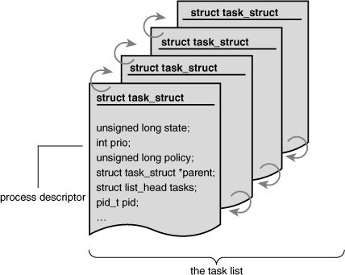
The task_struct structure is allocated via the slab allocator to provide object reuse and cache coloring (see Chapter 12). Prior to the 2.6 kernel series, struct task_struct was stored at the end of the kernel stack of each process. This allowed architectures with few registers, such as x86, to calculate the location of the process descriptor via the stack pointer without using an extra register to store the location. With the process descriptor now dynamically created via the slab allocator, a new structure, struct thread_info, was created that again lives at the bottom of the stack (for stacks that grow down) and at the top of the stack (for stacks that grow up).3 See Figure 3.2.
3
Register-impaired architectures were not the only reason for creating struct thread_info. The new structure also makes it rather easy to calculate offsets of its values for use in assembly code.
Figure 3.2. The process descriptor and kernel stack.
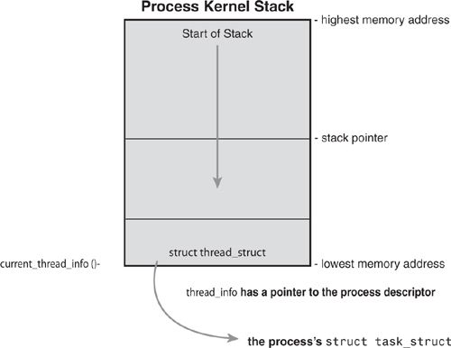
The thread_info structure is defined on x86 in <asm/thread_info.h> as
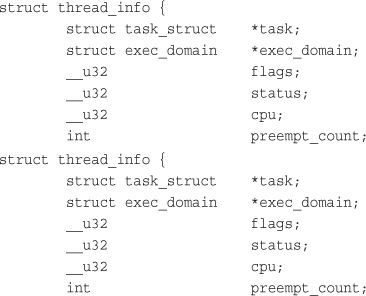
Each task’s thread_info structure is allocated at the end of its stack. The task element of the structure is a pointer to the task’s actual task_struct.
The system identifies processes by a unique process identification value or PID. The PID is a numerical value represented by the opaque type4
pid_t, which is typically an int. Because of backward compatibility with earlier Unix and Linux versions, however, the default maximum value is only 32,768 (that of a short int), although the value optionally can be increased as high as four million (this is controlled in <linux/threads.h>. The kernel stores this value as pid inside each process descriptor.
4 An opaque type is a data type whose physical representation is unknown or irrelevant.
This maximum value is important because it is essentially the maximum number of processes that may exist concurrently on the system. Although 32,768 might be sufficient for a desktop system, large servers may require many more processes. Moreover, the lower the value, the sooner the values will wrap around, destroying the useful notion that higher values indicate later-run processes than lower values. If the system is willing to break compatibility with old applications, the administrator may increase the maximum value via /proc/sys/kernel/pid_max.
Inside the kernel, tasks are typically referenced directly by a pointer to their task_struct structure. In fact, most kernel code that deals with processes works directly with struct task_struct. Consequently, it is useful to be able to quickly look up the process descriptor of the currently executing task, which is done via the current macro. This macro must be independently implemented by each architecture. Some architectures save a pointer to the task_struct structure of the currently running process in a register, enabling for efficient access. Other architectures, such as x86 (which has few registers to waste), make use of the fact that struct thread_info is stored on the kernel stack to calculate the location of thread_info and subsequently the task_struct.
On x86, current is calculated by masking out the 13 least-significant bits of the stack pointer to obtain the thread_info structure. This is done by the current_thread_info() function. The assembly is shown here:
movl $-8192, %eax
andl %esp, %eax
This assumes that the stack size is 8KB. When 4KB stacks are enabled, 4096 is used in lieu of 8192.
Finally, current dereferences the task member of thread_info to return the task_struct:
current_thread_info()->task;
Contrast this approach with that taken by PowerPC (IBM’s modern RISC-based microprocessor), which stores the current task_struct in a register. Thus, current on PPC merely returns the value stored in the register r2. PPC can take this approach because, unlike x86, it has plenty of registers. Because accessing the process descriptor is a common and important job, the PPC kernel developers deem using a register worthy for the task.
The state field of the process descriptor describes the current condition of the process (see Figure 3.3). Each process on the system is in exactly one of five different states. This value is represented by one of five flags:
•
TASK_RUNNING—The process is runnable; it is either currently running or on a runqueue waiting to run (runqueues are discussed in Chapter 4). This is the only possible state for a process executing in user-space; it can also apply to a process in kernel-space that is actively running.
•
TASK_INTERRUPTIBLE—The process is sleeping (that is, it is blocked), waiting for some condition to exist. When this condition exists, the kernel sets the process’s state toTASK_RUNNING. The process also awakes prematurely and becomes runnable if it receives a signal.
•
TASK_UNINTERRUPTIBLE—This state is identical toTASK_INTERRUPTIBLEexcept that it does not wake up and become runnable if it receives a signal. This is used in situations where the process must wait without interruption or when the event is expected to occur quite quickly. Because the task does not respond to signals in this state,TASK_UNINTERRUPTIBLEis less often used thanTASK_INTERRUPTIBLE.5
5
This is why you have those dreaded unkillable processes with state D in ps(1). Because the task will not respond to signals, you cannot send it a SIGKILL signal. Further, even if you could terminate the task, it would not be wise because the task is supposedly in the middle of an important operation and may hold a semaphore.
•
__TASK_TRACED—The process is being traced by another process, such as a debugger, via ptrace.
•
__TASK_STOPPED—Process execution has stopped; the task is not running nor is it eligible to run. This occurs if the task receives theSIGSTOP,SIGTSTP,SIGTTIN, orSIGTTOUsignal or if it receives any signal while it is being debugged.
Figure 3.3. Flow chart of process states.
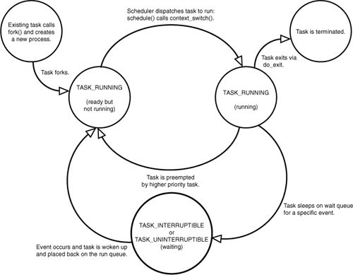
Kernel code often needs to change a process’s state. The preferred mechanism is using
set_task_state(task, state); /* set task 'task' to state 'state' */
This function sets the given task to the given state. If applicable, it also provides a memory barrier to force ordering on other processors. (This is only needed on SMP systems.) Otherwise, it is equivalent to
task->state = state;
The method set_current_state(state) is synonymous to set_task_state(current, state). See <linux/sched.h> for the implementation of these and related functions.
One of the most important parts of a process is the executing program code. This code is read in from an executable file and executed within the program’s address space. Normal program execution occurs in user-space. When a program executes a system call (see Chapter 5, “System Calls”) or triggers an exception, it enters kernel-space. At this point, the kernel is said to be “executing on behalf of the process” and is in process context. When in process context, the current macro is valid.6 Upon exiting the kernel, the process resumes execution in user-space, unless a higher-priority process has become runnable in the interim, in which case the scheduler is invoked to select the higher priority process.
6 Other than process context there is interrupt context, which we discuss in Chapter 7, “Interrupts and Interrupt Handlers.” In interrupt context, the system is not running on behalf of a process but is executing an interrupt handler. No process is tied to interrupt handlers.
System calls and exception handlers are well-defined interfaces into the kernel. A process can begin executing in kernel-space only through one of these interfaces—all access to the kernel is through these interfaces.
A distinct hierarchy exists between processes in Unix systems, and Linux is no exception. All processes are descendants of the init process, whose PID is one. The kernel starts init in the last step of the boot process. The init process, in turn, reads the system initscripts and executes more programs, eventually completing the boot process.
Every process on the system has exactly one parent. Likewise, every process has zero or more children. Processes that are all direct children of the same parent are called siblings. The relationship between processes is stored in the process descriptor. Each task_struct has a pointer to the parent’s task_struct, named parent, and a list of children, named children. Consequently, given the current process, it is possible to obtain the process descriptor of its parent with the following code:
struct task_struct *my_parent = current->parent;
Similarly, it is possible to iterate over a process’s children with
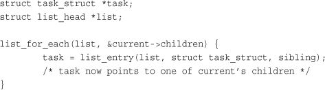
The init task’s process descriptor is statically allocated as init_task. A good example of the relationship between all processes is the fact that this code will always succeed:
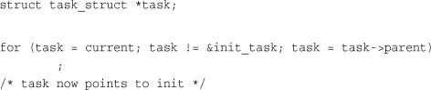
In fact, you can follow the process hierarchy from any one process in the system to any other. Oftentimes, however, it is desirable simply to iterate over all processes in the system. This is easy because the task list is a circular, doubly linked list. To obtain the next task in the list, given any valid task, use
list_entry(task->tasks.next, struct task_struct, tasks)
Obtaining the previous task works the same way:
list_entry(task->tasks.prev, struct task_struct, tasks)
These two routines are provided by the macros next_task(task) and prev_task(task), respectively. Finally, the macro for_each_process(task) is provided, which iterates over the entire task list. On each iteration, task points to the next task in the list:
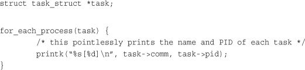
Caution
It is expensive to iterate over every task in a system with many processes; code should have good reason (and no alternative) before doing so.
Process creation in Unix is unique. Most operating systems implement a spawn mechanism to create a new process in a new address space, read in an executable, and begin executing it. Unix takes the unusual approach of separating these steps into two distinct functions: fork() and exec().7 The first, fork(), creates a child process that is a copy of the current task. It differs from the parent only in its PID (which is unique), its PPID (parent’s PID, which is set to the original process), and certain resources and statistics, such as pending signals, which are not inherited. The second function, exec(), loads a new executable into the address space and begins executing it. The combination of fork() followed by exec() is similar to the single function most operating systems provide.
7
By exec() I mean any member of the exec() family of functions. The kernel implements the execve() system call on top of which execlp(), execle(), execv(), and execvp() are implemented.
Traditionally, upon fork(), all resources owned by the parent are duplicated and the copy is given to the child. This approach is naive and inefficient in that it copies much data that might otherwise be shared. Worse still, if the new process were to immediately execute a new image, all that copying would go to waste. In Linux, fork() is implemented through the use of copy-on-write pages. Copy-on-write (or COW) is a technique to delay or altogether prevent copying of the data. Rather than duplicate the process address space, the parent and the child can share a single copy.
The data, however, is marked in such a way that if it is written to, a duplicate is made and each process receives a unique copy. Consequently, the duplication of resources occurs only when they are written; until then, they are shared read-only. This technique delays the copying of each page in the address space until it is actually written to. In the case that the pages are never written—for example, if exec() is called immediately after fork()—they never need to be copied.
The only overhead incurred by fork() is the duplication of the parent’s page tables and the creation of a unique process descriptor for the child. In the common case that a process executes a new executable image immediately after forking, this optimization prevents the wasted copying of large amounts of data (with the address space, easily tens of megabytes). This is an important optimization because the Unix philosophy encourages quick process execution.
Linux implements fork() via the clone() system call. This call takes a series of flags that specify which resources, if any, the parent and child process should share. (See “The Linux Implementation of Threads” section later in this chapter for more about the flags.) The fork(), vfork(), and __clone() library calls all invoke the clone() system call with the requisite flags. The clone() system call, in turn, calls do_fork().
The bulk of the work in forking is handled by do_fork(), which is defined in kernel/fork.c. This function calls copy_process() and then starts the process running. The interesting work is done by copy_process():
dup_task_struct(), which creates a new kernel stack, thread_info structure, and task_struct for the new process. The new values are identical to those of the current task. At this point, the child and parent process descriptors are identical.task_struct remain unchanged.TASK_UNINTERRUPTIBLE to ensure that it does not yet run.copy_process() calls copy_flags() to update the flags member of the task_struct. The PF_SUPERPRIV flag, which denotes whether a task used superuser privileges, is cleared. The PF_FORKNOEXEC flag, which denotes a process that has not called exec(), is set.alloc_pid() to assign an available PID to the new task.clone(), copy_process() either duplicates or shares open files, filesystem information, signal handlers, process address space, and namespace. These resources are typically shared between threads in a given process; otherwise they are unique and thus copied here.copy_process() cleans up and returns to the caller a pointer to the new child.Back in do_fork(), if copy_process() returns successfully, the new child is woken up and run. Deliberately, the kernel runs the child process first.8 In the common case of the child simply calling exec() immediately, this eliminates any copy-on-write overhead that would occur if the parent ran first and began writing to the address space.
8 This does not currently function correctly, although the goal is for the child to run first.
vfork()The vfork() system call has the same effect as fork(), except that the page table entries of the parent process are not copied. Instead, the child executes as the sole thread in the parent’s address space, and the parent is blocked until the child either calls exec() or exits. The child is not allowed to write to the address space. This was a welcome optimization in the old days of 3BSD when the call was introduced because at the time copy-on-write pages were not used to implement fork(). Today, with copy-on-write and child-runs-first semantics, the only benefit to vfork() is not copying the parent page tables entries. If Linux one day gains copy-on-write page table entries, there will no longer be any benefit.9 Because the semantics of vfork() are tricky (what, for example, happens if the exec() fails?), ideally systems would not need vfork() and the kernel would not implement it. It is entirely possible to implement vfork() as a normal fork()—this is what Linux did until version 2.2.
9 Patches are available to add this functionality to Linux. In time, this feature will most likely find its way into the mainline Linux kernel.
The vfork() system call is implemented via a special flag to the clone() system call:
copy_process(), the task_struct member vfork_done is set to NULL.do_fork(), if the special flag was given, vfork_done is pointed at a specific address.vfork_done pointer.mm_release() function, which is used when a task exits a memory address space, vfork_done is checked to see whether it is NULL. If it is not, the parent is signaled.do_fork(), the parent wakes up and returns.If this all goes as planned, the child is now executing in a new address space, and the parent is again executing in its original address space. The overhead is lower, but the implementation is not pretty.
Threads are a popular modern programming abstraction. They provide multiple threads of execution within the same program in a shared memory address space. They can also share open files and other resources. Threads enable concurrent programming and, on multiple processor systems, true parallelism.
Linux has a unique implementation of threads. To the Linux kernel, there is no concept of a thread. Linux implements all threads as standard processes. The Linux kernel does not provide any special scheduling semantics or data structures to represent threads. Instead, a thread is merely a process that shares certain resources with other processes. Each thread has a unique task_struct and appears to the kernel as a normal process—threads just happen to share resources, such as an address space, with other processes.
This approach to threads contrasts greatly with operating systems such as Microsoft Windows or Sun Solaris, which have explicit kernel support for threads (and sometimes call threads lightweight processes). The name “lightweight process” sums up the difference in philosophies between Linux and other systems. To these other operating systems, threads are an abstraction to provide a lighter, quicker execution unit than the heavy process. To Linux, threads are simply a manner of sharing resources between processes (which are already quite lightweight).10 For example, assume you have a process that consists of four threads. On systems with explicit thread support, one process descriptor might exist that, in turn, points to the four different threads. The process descriptor describes the shared resources, such as an address space or open files. The threads then describe the resources they alone possess. Conversely, in Linux, there are simply four processes and thus four normal task_struct structures. The four processes are set up to share certain resources. The result is quite elegant.
10 As an example, benchmark process creation time in Linux versus process (or even thread!) creation time in these other operating systems. The results are favorable for Linux.
Threads are created the same as normal tasks, with the exception that the clone() system call is passed flags corresponding to the specific resources to be shared:
clone(CLONE_VM | CLONE_FS | CLONE_FILES | CLONE_SIGHAND, 0);
The previous code results in behavior identical to a normal fork(), except that the address space, filesystem resources, file descriptors, and signal handlers are shared. In other words, the new task and its parent are what are popularly called threads.
In contrast, a normal fork() can be implemented as
clone(SIGCHLD, 0);
And vfork() is implemented as
clone(CLONE_VFORK | CLONE_VM | SIGCHLD, 0);
The flags provided to clone() help specify the behavior of the new process and detail what resources the parent and child will share. Table 3.1 lists the clone flags, which are defined in <linux/sched.h>, and their effect.
Table 3.1. clone() Flags
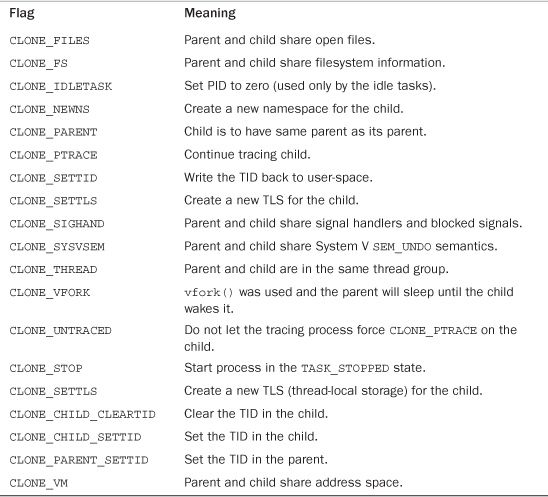
It is often useful for the kernel to perform some operations in the background. The kernel accomplishes this via kernel threads—standard processes that exist solely in kernel-space. The significant difference between kernel threads and normal processes is that kernel threads do not have an address space. (Their mm pointer, which points at their address space, is NULL.) They operate only in kernel-space and do not context switch into user-space. Kernel threads, however, are schedulable and preemptable, the same as normal processes.
Linux delegates several tasks to kernel threads, most notably the flush tasks and the ksoftirqd task. You can see the kernel threads on your Linux system by running the command ps -ef. There are a lot of them! Kernel threads are created on system boot by other kernel threads. Indeed, a kernel thread can be created only by another kernel thread. The kernel handles this automatically by forking all new kernel threads off of the kthreadd kernel process. The interface, declared in <linux/kthread.h>, for spawning a new kernel thread from an existing one is
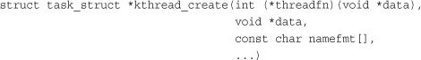
The new task is created via the clone() system call by the kthread kernel process. The new process will run the threadfn function, which is passed the data argument. The process will be named namefmt, which takes printf-style formatting arguments in the variable argument list. The process is created in an unrunnable state; it will not start running until explicitly woken up via wake_up_process(). A process can be created and made runnable with a single function, kthread_run():
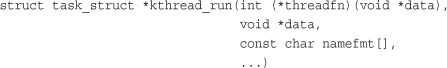
This routine, implemented as a macro, simply calls both kthread_create() and wake_up_process():
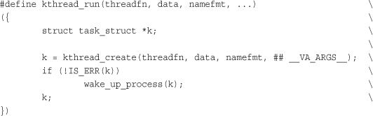
When started, a kernel thread continues to exist until it calls do_exit() or another part of the kernel calls kthread_stop(), passing in the address of the task_struct structure returned by kthread_create():
int kthread_stop(struct task_struct *k)
We discuss specific kernel threads in more detail in later chapters.
It is sad, but eventually processes must die. When a process terminates, the kernel releases the resources owned by the process and notifies the child’s parent of its demise.
Generally, process destruction is self-induced. It occurs when the process calls the exit() system call, either explicitly when it is ready to terminate or implicitly on return from the main subroutine of any program. (That is, the C compiler places a call to exit() after main() returns.) A process can also terminate involuntarily. This occurs when the process receives a signal or exception it cannot handle or ignore. Regardless of how a process terminates, the bulk of the work is handled by do_exit(), defined in kernel/exit.c, which completes a number of chores:
PF_EXITING flag in the flags member of the task_struct.del_timer_sync() to remove any kernel timers. Upon return, it is guaranteed that no timer is queued and that no timer handler is running.do_exit() calls acct_update_integrals() to write out accounting information.exit_mm() to release the mm_struct held by this process. If no other process is using this address space—that it, if the address space is not shared—the kernel then destroys it.exit_sem(). If the process is queued waiting for an IPC semaphore, it is dequeued here.exit_files() and exit_fs() to decrement the usage count of objects related to file descriptors and filesystem data, respectively. If either usage counts reach zero, the object is no longer in use by any process, and it is destroyed.exit_code member of the task_struct, to the code provided by exit() or whatever kernel mechanism forced the termination. The exit code is stored here for optional retrieval by the parent.exit_notify() to send signals to the task’s parent, reparents any of the task’s children to another thread in their thread group or the init process, and sets the task’s exit state, stored in exit_state in the task_struct structure, to EXIT_ZOMBIE.do_exit() calls schedule() to switch to a new process (see Chapter 4). Because the process is now not schedulable, this is the last code the task will ever execute. do_exit() never returns.At this point, all objects associated with the task (assuming the task was the sole user) are freed. The task is not runnable (and no longer has an address space in which to run) and is in the EXIT_ZOMBIE exit state. The only memory it occupies is its kernel stack, the thread_info structure, and the task_struct structure. The task exists solely to provide information to its parent. After the parent retrieves the information, or notifies the kernel that it is uninterested, the remaining memory held by the process is freed and returned to the system for use.
After do_exit() completes, the process descriptor for the terminated process still exists, but the process is a zombie and is unable to run. As discussed, this enables the system to obtain information about a child process after it has terminated. Consequently, the acts of cleaning up after a process and removing its process descriptor are separate. After the parent has obtained information on its terminated child, or signified to the kernel that it does not care, the child’s task_struct is deallocated.
The wait() family of functions are implemented via a single (and complicated) system call, wait4(). The standard behavior is to suspend execution of the calling task until one of its children exits, at which time the function returns with the PID of the exited child. Additionally, a pointer is provided to the function that on return holds the exit code of the terminated child.
When it is time to finally deallocate the process descriptor, release_task() is invoked. It does the following:
__exit_signal(), which calls __unhash_process(), which in turns calls detach_pid() to remove the process from the pidhash and remove the process from the task list.__exit_signal() releases any remaining resources used by the now dead process and finalizes statistics and bookkeeping.release_task() notifies the zombie leader’s parent.release_task() calls put_task_struct() to free the pages containing the process’s kernel stack and thread_info structure and deallocate the slab cache containing the task_struct.At this point, the process descriptor and all resources belonging solely to the process have been freed.
If a parent exits before its children, some mechanism must exist to reparent any child tasks to a new process, or else parentless terminated processes would forever remain zombies, wasting system memory. The solution is to reparent a task’s children on exit to either another process in the current thread group or, if that fails, the init process. do_exit() calls exit_notify(), which calls forget_original_parent(), which, in turn, calls find_new_reaper() to perform the reparenting:
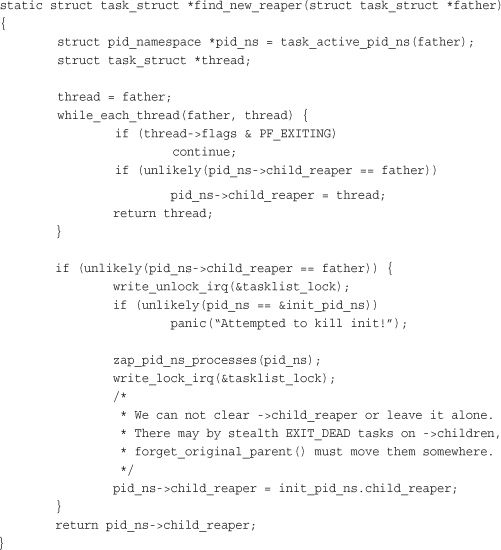
This code attempts to find and return another task in the process’s thread group. If another task is not in the thread group, it finds and returns the init process. Now that a suitable new parent for the children is found, each child needs to be located and reparented to reaper:
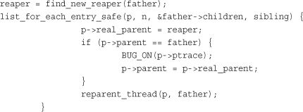
ptrace_exit_finish() is then called to do the same reparenting but to a list of ptraced children:
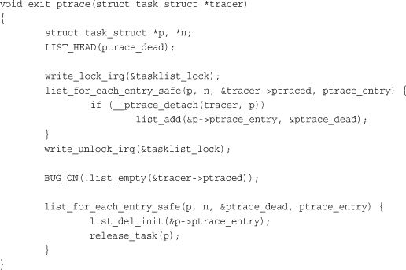
The rationale behind having both a child list and a ptraced list is interesting; it is a new feature in the 2.6 kernel. When a task is ptraced, it is temporarily reparented to the debugging process. When the task’s parent exits, however, it must be reparented along with its other siblings. In previous kernels, this resulted in a loop over every process in the system looking for children. The solution is simply to keep a separate list of a process’s children being ptraced—reducing the search for one’s children from every process to just two relatively small lists.
With the process successfully reparented, there is no risk of stray zombie processes. The init process routinely calls wait() on its children, cleaning up any zombies assigned to it.
In this chapter, we looked at the core operating system abstraction of the process. We discussed the generalities of the process, why it is important, and the relationship between processes and threads. We then discussed how Linux stores and represents processes (with task_struct and thread_info), how processes are created (via fork() and ultimately clone()), how new executable images are loaded into address spaces (via the exec() family of system calls), the hierarchy of processes, how parents glean information about their deceased children (via the wait() family of system calls), and how processes ultimately die (forcefully or intentionally via exit()). The process is a fundamental and crucial abstraction, at the heart of every modern operating system, and ultimately the reason we have operating systems altogether (to run programs).
The next chapter discusses process scheduling, which is the delicate and interesting manner in which the kernel decides which processes to run, at what time, and in what order.